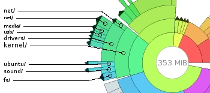

Desktop Install¶
install all the apps I love to use everyday ..
Add Repositories¶
add these repositories to the system
apt-add-repository --yes ppa:hugin/hugin-builds
apt-add-repository --yes ppa:zarquon42/meshlab
add-apt-repository --yes ppa:videolan/stable-daily
add-apt-repository --yes ppa:otto-kesselgulasch/gimp
add-apt-repository --yes ppa:webupd8team/java
add-apt-repository --yes ppa:mc3man/trusty-media
add-apt-repository --yes ppa:ubuntu-wine/ppa
apt-get --yes update
apt-get -y dist-upgrade
Get more stuffs ...¶
apt-get install --yes gparted filelight xosview
apt-get install --yes hfsplus hfsprogs hfsutils
apt-get install --yes vlc flashplugin-installer pepperflashplugin-nonfree
apt-get install --yes libreoffice libreoffice-gtk libreoffice-style-sifr
apt-get install --yes chromium-browser firefox thunderbird transmission
apt-get install --yes gimp inkscape hugin meshlab
apt-get install --yes kdenlive filezilla winff
Get even more stuffs ...¶
{kind=link}
install wine to run windows apps on linux
apt-get install --yes wine
{kind=link}
install java if you need it
apt-get install --yes oracle-java9-installer
Finish your stuffs¶
apt-get --yes update
apt-get -y dist-upgrade